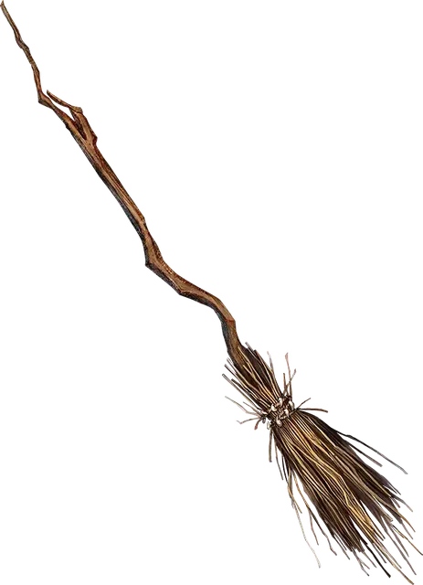

Помело полёта
Broom of Flying
Чудесный предмет, необычный

Рекомендованная стоимость 101-500 зм
Это деревянное помело весит 3 фунта и действует как обычная метла, пока вы не сядете на неё верхом и не произнесёте командное слово. После этого она начинает парить и может подняться в воздух. У неё скорость полёта 50 футов. Она может поднимать до 400 фунтов, но при весе 200 фунтов её скорость уже уменьшается до 30 футов. Помело перестаёт парить, когда вы приземляетесь.
Вы можете отправить помело в другое место, находящееся в пределах 1 мили, если произнесёте командное слово и назовёте место, знакомое вам. Помело вернётся к вам, когда вы произнесёте второе командное слово, при условии, что помело всё ещё находится в пределах 1 мили.